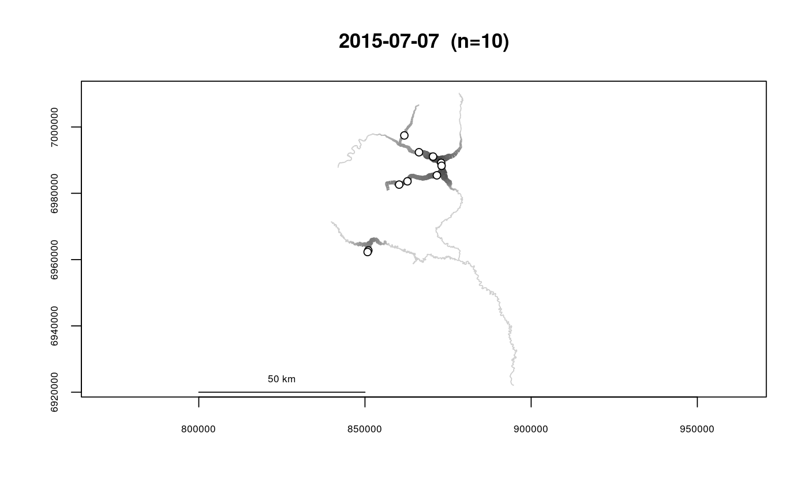
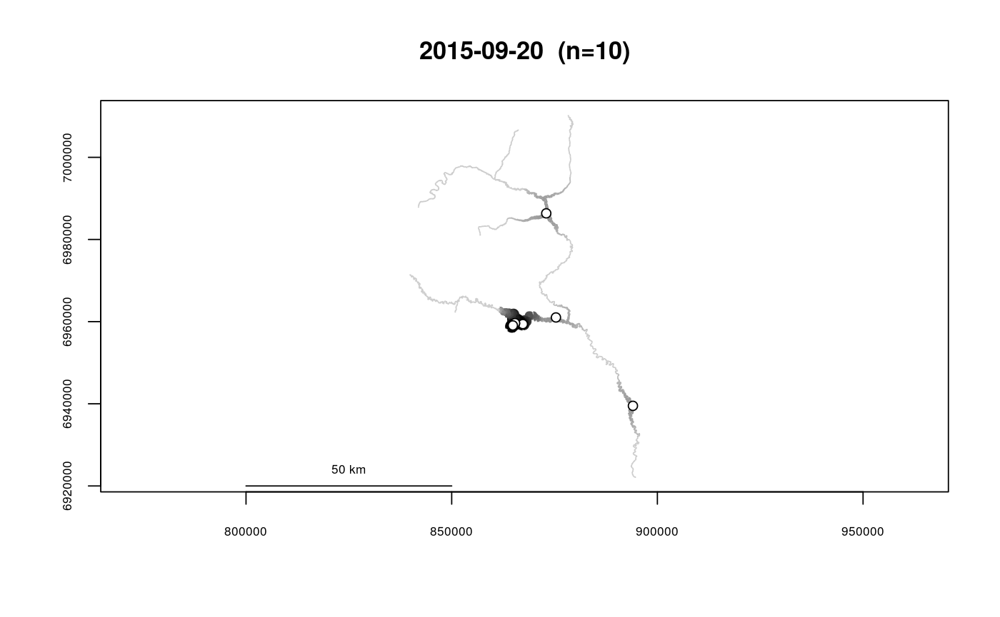

Plot Kernel Density Using River Distance
Produces a kernel density plot from a kernel density object created by makeriverdensity.
If the kernel density object includes densities from multiple surveys, a new plot will be created for each survey.
Densities can be displayed using either line widths, color, or both.
The relative densities that are displayed in the plot are calculated
according to the form (density/maxdensity)^pwr, with the value of pwr set
by the pwr argument. Setting pwr to a value less than 1
allows smaller values to be more visible on the plot.
# S3 method for riverdensity plot(x, whichplots = NULL, points = TRUE, bycol = TRUE, bylwd = TRUE, maxlwd = 10, pwr = 0.7, scalebyN = TRUE, ramp = "grey", lwd = 1, linecol = "black", denscol = "black", alpha = 1, dark = 1, showN = TRUE, main = NULL, xlab = "", ylab = "", add = FALSE, scalebar = TRUE, ...)
Arguments
| x | A river density object created by makeriverdensity. |
|---|---|
| whichplots | A vector of plots to produce, if multiple plots are
produced. For example, specifying |
| points | Whether to add the points used for density calculation.
Defaults to |
| bycol | Whether to use a color ramp to show densities. Defaults to
|
| bylwd | Whether to use line thickness to show densities. Defaults to
|
| maxlwd | The maximum line width to use if |
| pwr | The power to use in the nonlinear transformation calculating the relative density values to be displayed (see above.) Defaults to 0.7. |
| scalebyN | Whether to display relative density values scaled by sample
size. Specifying |
| ramp | The color ramp used to display densities if |
| lwd | The line width to use for background lines if |
| linecol | The line color to use for background lines if |
| denscol | The line color to use for showing density if |
| alpha | The opacity value for lines. This could potentially allow multiple density plots to be overlayed with different colors. |
| dark | A color-saturation adjustment, with values in [0,1]. A value of 1 uses the true colors, and a value less than 1 will render the colors as slightly darker (less saturated), which may be appear better. Defaults to 1. |
| showN | Whether to automatically include the number of points used as part of the plot title(s). |
| main | Plot title(s), either given as a single text string which is
repeated if multiple plots are produced, or a vector of text strings (one
for each plot produced). If multiple plots are produced (resulting from
multiple surveys), accepting the default ( |
| xlab | X-axis label |
| ylab | Y-axis label |
| add | Whether to produce a new plot ( |
| scalebar | Whether to add a scale bar to plot(s). Defaults to |
| ... | Additional plotting parameters. |
See also
makeriverdensity, plotriverdensitypoints
Examples
data(Gulk, fakefish) Gulk_dens <- makeriverdensity(seg=fakefish$seg, vert=fakefish$vert, rivers=Gulk, survey=fakefish$flight.date)#> | | | 0% | | | 1% | |= | 1% | |== | 2% | |== | 3% | |== | 4% | |=== | 4% | |==== | 5% | |==== | 6% | |===== | 6% | |===== | 7% | |====== | 8% | |====== | 9% | |======= | 10% | |======== | 11% | |======== | 12% | |========= | 13% | |========== | 14% | |=========== | 15% | |=========== | 16% | |============ | 16% | |============ | 17% | |============ | 18% | |============= | 19% | |============== | 19% | |============== | 20% | |=============== | 21% | |================ | 22% | |================ | 23% | |================ | 24% | |================= | 24% | |================== | 25% | |================== | 26% | |=================== | 27% | |==================== | 28% | |==================== | 29% | |===================== | 30% | |===================== | 31% | |====================== | 31% | |====================== | 32% | |======================= | 33% | |======================= | 34% | |======================== | 34% | |======================== | 35% | |========================= | 36% | |========================== | 36% | |========================== | 37% | |========================== | 38% | |=========================== | 39% | |============================ | 39% | |============================ | 40% | |============================ | 41% | |============================= | 41% | |============================== | 42% | |============================== | 43% | |============================== | 44% | |=============================== | 44% | |================================ | 45% | |================================ | 46% | |================================= | 47% | |================================== | 48% | |================================== | 49% | |=================================== | 50% | |==================================== | 51% | |==================================== | 52% | |===================================== | 53% | |====================================== | 54% | |====================================== | 55% | |======================================= | 56% | |======================================== | 56% | |======================================== | 57% | |======================================== | 58% | |========================================= | 59% | |========================================== | 59% | |========================================== | 60% | |========================================== | 61% | |=========================================== | 61% | |============================================ | 62% | |============================================ | 63% | |============================================ | 64% | |============================================= | 64% | |============================================== | 65% | |============================================== | 66% | |=============================================== | 67% | |================================================ | 68% | |================================================ | 69% | |================================================= | 70% | |================================================= | 71% | |================================================== | 71% | |================================================== | 72% | |=================================================== | 73% | |=================================================== | 74% | |==================================================== | 74% | |==================================================== | 75% | |===================================================== | 76% | |====================================================== | 76% | |====================================================== | 77% | |====================================================== | 78% | |======================================================= | 79% | |======================================================== | 79% | |======================================================== | 80% | |======================================================== | 81% | |========================================================= | 81% | |========================================================== | 82% | |========================================================== | 83% | |========================================================== | 84% | |=========================================================== | 84% | |============================================================ | 85% | |============================================================ | 86% | |============================================================= | 87% | |============================================================== | 88% | |============================================================== | 89% | |=============================================================== | 90% | |================================================================ | 91% | |================================================================ | 92% | |================================================================= | 93% | |================================================================== | 94% | |================================================================== | 95% | |=================================================================== | 96% | |==================================================================== | 96% | |==================================================================== | 97% | |==================================================================== | 98% | |===================================================================== | 99% | |======================================================================| 99% | |======================================================================| 100%# # 10 plots will be created, recommend calling par(mfrow=c(2,5)) plot(x=Gulk_dens)